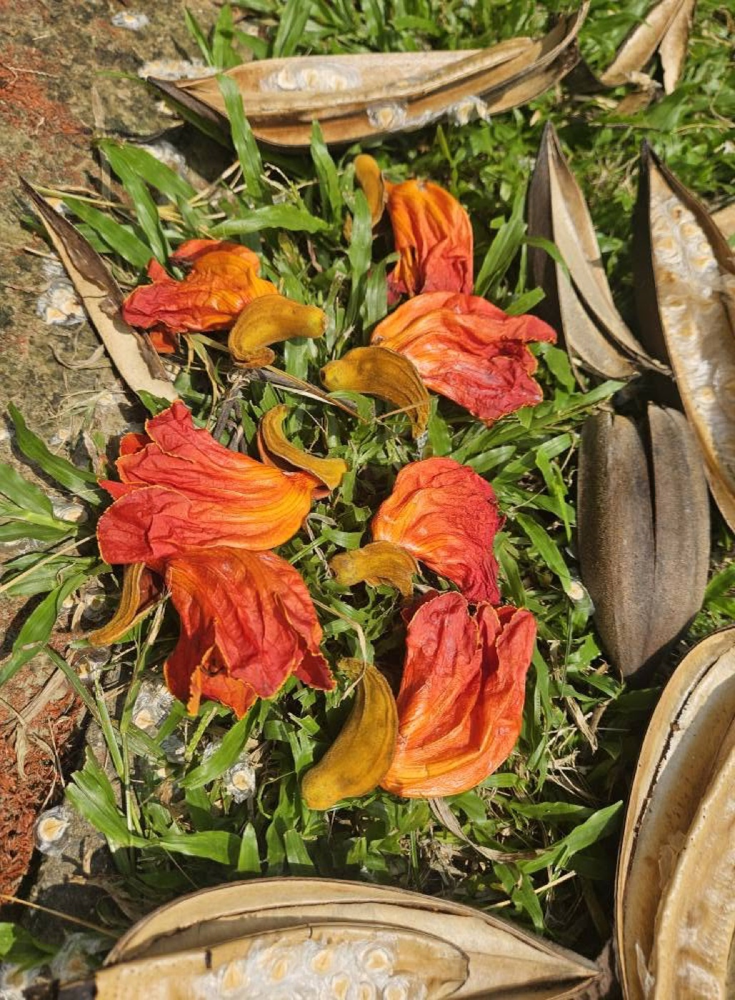
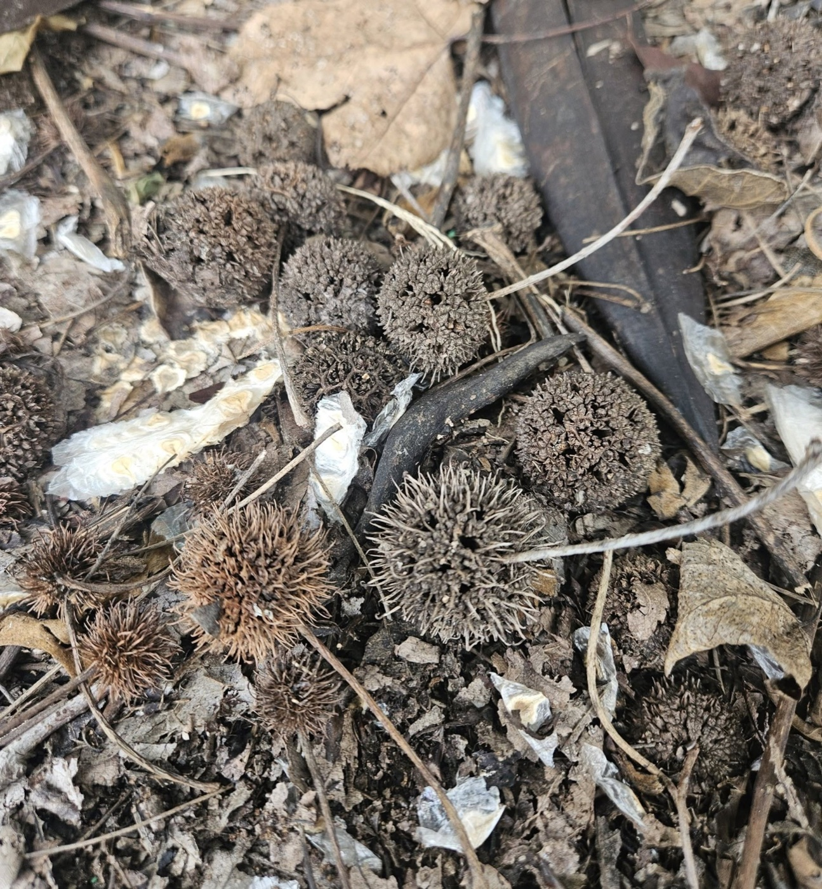
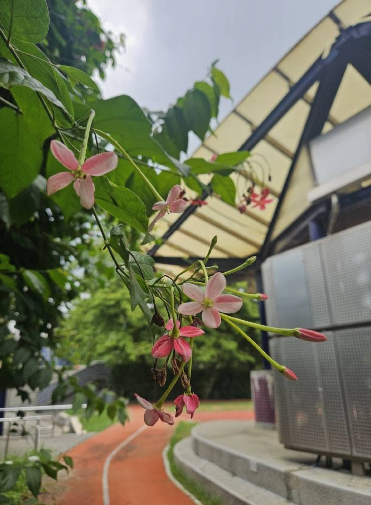
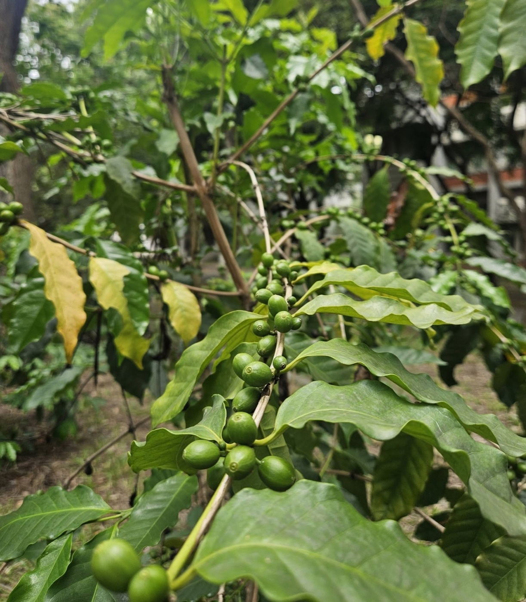

Every seed holds a secret — a tiny miracle wrapped in a shell, waiting for the right moment to burst into life. At Hsinmin Elementary, our students had the chance to step outside, slow down, and discover just how incredible the world of seeds truly is.
During a special campus nature exploration activity, students walked through the school grounds with curious eyes and open hands — collecting seeds, touching them, smelling them, and asking questions. From papery wings that float on the breeze, to hard round shells that protect tiny green life inside; from seeds no bigger than a grain of sand, to ones as large as a marble — the variety was stunning.
Students learned that seeds travel in remarkable ways — some fly with the wind, some hitch a ride on an animal's fur, some float on water, and some simply drop and roll. Every seed has its own clever strategy for finding a new home. And every one of them, no matter how tiny, carries the instructions for an entire plant inside.
Being curious about nature is one of the most important skills a learner can have. When we observe the world around us carefully, we begin to see the extraordinary in the ordinary — and that is where science, wonder, and a lifelong love of learning all begin.
🌿 Thank you to our teachers and students for bringing the campus alive with curiosity!
🌱【種子不可思議｜校園植物探索】
每一顆種子，都藏著一個小小的奇蹟。在新民國小，孩子們走出教室，踏上校園的每一個角落，用眼睛、用雙手，去發現那個隱藏在草叢間、樹下和泥土裡的不可思議世界。
孩子們蹲下來，仔細觀察各種形態的種子：有輕薄如紙、可以隨風飄飛的翅果；有外殼堅硬、保護著嫩芽的豆莢；有細如沙粒的微小種子，也有大如彈珠的圓滾種子。每一顆都有自己的故事，每一顆都有自己旅行的方式。
透過這次探索，孩子們不只認識了植物的多樣性，更學會了用好奇的眼光去看待身邊的自然。那份「哇！原來如此！」的驚喜感，正是科學探究精神最美好的起點。
🌿 感謝帶領孩子探索自然的老師們，也謝謝每一位帶著好奇心走入校園的孩子。種子不只種在土壤裡，也種在每一顆渴望學習的心裡。
Words About Seeds & Nature英語學習角 · 和種子與自然有關的小單字
Six key words — tap 🔊 to listen, then try the conversation and quiz.
六個關鍵字，點 🔊 聽發音，再試試對話和小考。
情境：兩位同學在校園裡探索他們找到的種子。